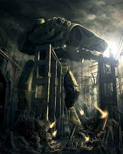
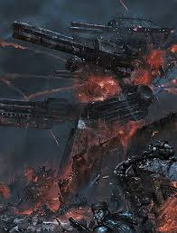
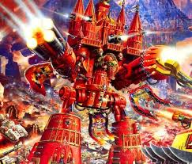

Warhound titans
Warhound scout titans are the smallest of titans deployed by the Imperium of man. They are also the only titans to have roit control and strickly anti-personel loadouts.
Reaver titans

Smallest of the true battle titans. Armed with weapons more like the Warhound than the larger classes.
Warlord titans
The most common titan in the Imperium of man's arsonel. also has the largest number of equipable weapons.
Emporer titans
The largest titan model. Equiped with weapons made for killing other titans or cities from great range. Emporer titans are always deployed with smaller titans to back them up.